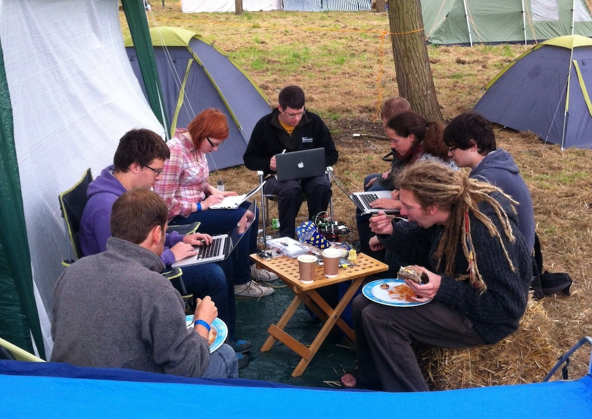
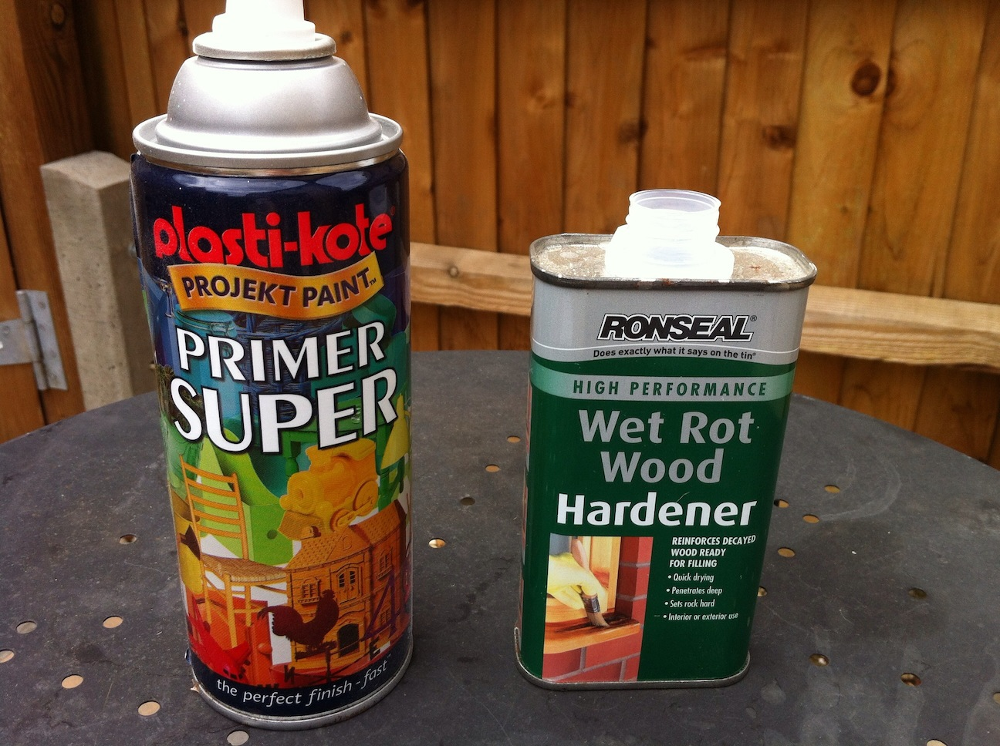
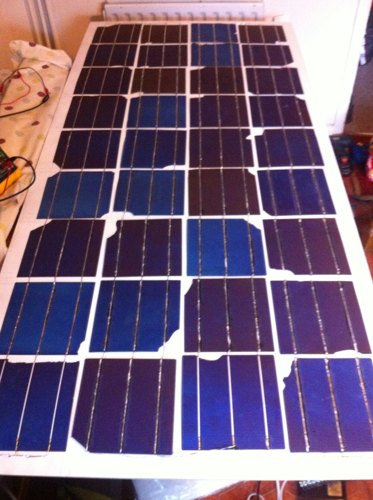
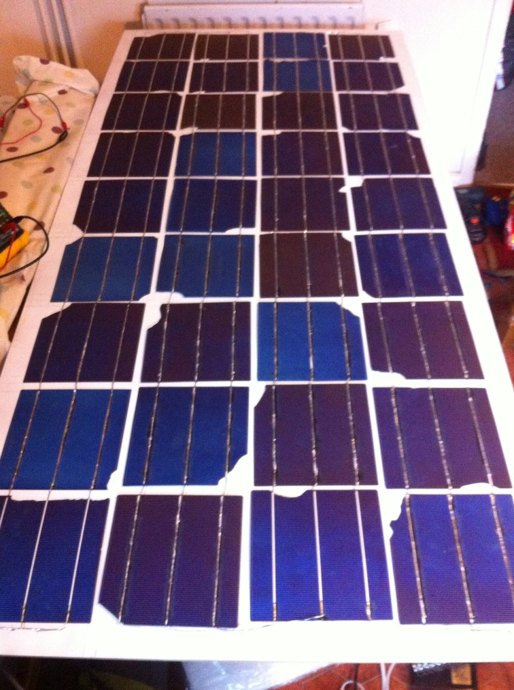

Going off grid
…a little bit
Chris Elsmore & Steve Pike
@elsmorian & @stringfellow
Purpose


http://www.flickr.com/photos/doug88888/4612035503 http://www.flickr.com/photos/88364173@N00/9331718347
EMF Camp 2012
Camping, Making, Hacking, Fire & Club Mate!
Good low power PV test bed
https://www.emfcamp.orgMaking A Solar Panel?
Making A Solar Panel!

Making A Solar Panel!
 

Making A Solar Panel!

Parts & cost
- B-grade cells - eBay, £40
- Acrylic Offcuts - Homebase, £10
- MDF - B&Q, £15
Sensing and reporting
Successes and failures
It worked! But, what went wrong
Current status
Worth it?
Not monetarily or for longevity, but could be if sealing wasn't an issue. Definitely worth it as it inspired Steve to…
Low effort install

Parts & cost
- Biard 100W Monocrystalline PV panel (ebay, £119)
- Numax 110AH Motorhome battery (ebay, £84)
- Victron BlueSolar 5A regulator (ebay, £28)
- Misc wires and stuff (ebay, ≈£30)
Total: ≈£260
Sensing and reporting
Sensing and reporting
&title=100W%20solar%20panel%20current&show_axis_labels=true&detailed_grid=true&scale=manual&min=0&max=5&timezone=UTC)
Hiccups
- Dodgy wiring - use a crimp and solder!
- Cables too long? MacBook Pro charging bit tricky...
Current status
You're looking at a PV-Python-Pi-powered slide deck!
Router, Pi + Arduino powered by PV :-)
Worth it?
Remains to be seen. Monetarily, probably not (do some calcs?) Learnt a lot, and it feels good.
Stuff we've powered
N64, MacBooks, iPhones, iPads, router, Pi, Airbed pump, LED lanterns, UAV battery charger…